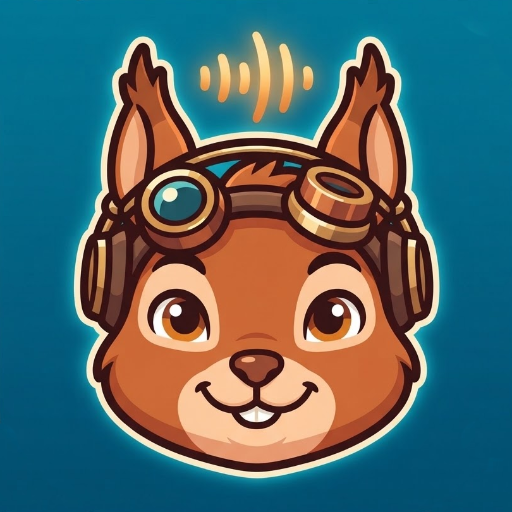
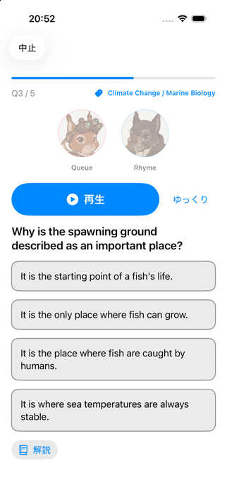
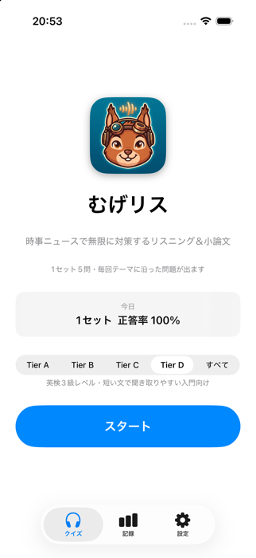

時事ニュースで無限に対策するリスニング＆小論文
iPhone ／ 完全ローカル動作・登録不要・広告なし官公庁や公的機関が発信する時事ニュースをもとにした英語リスニング問題を、1セット5問で気軽に解けるアプリです。音声を聞いて4択から答え、日本語の解説で理解を確かめます。毎回「テーマ」に沿った問題がまとまって出るので、1回のレッスンで話題の語彙や言い回しに慣れていけます。


英文は音声で再生。会話文ではキャラクターが交互に話し、話している側がハイライトされます。「ゆっくり」再生にも対応。
キーワードが近い問題がまとまって出題され、毎回「今回のテーマ」が表示されます。同じ問題・同じ設問の重複は避けます。
語彙の難しさで Tier A〜D から選択。入門者向けの Tier D は、短い文で聞き取りやすい問題を厳選しています。
スクリプトと日本語の解説は、ボタンを押すまで表示されません。まずは耳だけで挑戦できます。
正解した問題の出題優先度は下がり、同じ問題に出会いにくくなります。間違えた問題は復習のため残ります。
今日・1週間・1か月・通算の成績を、難易度別に色分けしたグラフで確認できます。
1セットごとの結果を、iOSの共有機能でお好きな相手やアプリに送れます（送信は常にあなたの操作で行われます）。
読み上げ音声の選択、効果音の音量、ライト／ダーク／システム連動の画面テーマを変更できます。
「すべて」を選ぶと全レベルから出題されます。選んだTierは次回起動時も保持されます。
※キャラクター名は仮称です。
今後のバージョンでは、新しい問題や高音質の音声データをWeb経由でダウンロードできるようにする予定です。内容や取り扱いが変わる場合は、事前にプライバシーポリシーを更新してお知らせします。